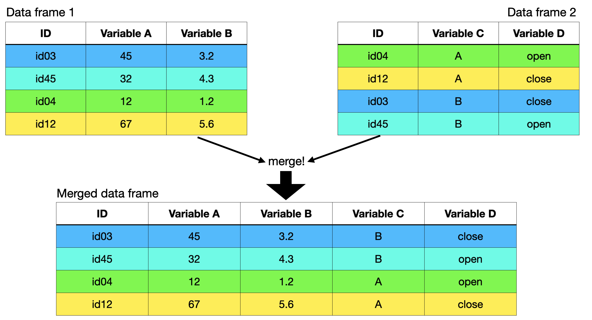
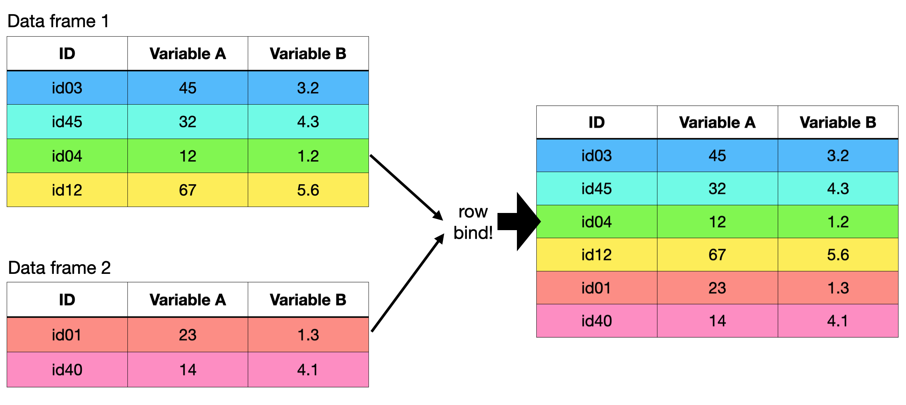

Often times we are interested in exploring connections among variables from different sources. Merging your data files can be a way of collecting all the variables of interest so you can explore research questions and hypotheses about the data.
In addition, merging can be used to label your observations. We go through examples below.
What merging is:
Merging joins columns from two or more data frames based on matching row information across the data frames.

What merging isn’t:
Merging isn’t about joining data frames by rows. Instead row binding is what you need if you have two data frames with the exact same variables (columns) that you want to join in one data frame. For this, try the rbind() function in base R.

How you can do it:
There are a number of different ways of merging files in R. For these examples, let’s consider two data frames:
# The first data frame (Dat1) contains information on ## ID: organism ID## Day: day of sampling## Length: length at samplingstr(Dat1)
'data.frame': 40 obs. of 3 variables:
$ ID : chr "id29" "id30" "id22" "id31" ...
$ Day : num 1 2 1 2 1 1 2 1 2 2 ...
$ Length: num 150 164 110 134 155 125 144 144 139 167 ...
# The second data frame (Dat2) contains information on ## ID: organism ID## Day: day of sampling## Temp: temperature at samplingstr(Dat2)
'data.frame': 40 obs. of 3 variables:
$ ID : chr "id23" "id20" "id25" "id29" ...
$ Day : num 2 2 2 1 1 1 2 1 2 1 ...
$ Temp: num 7.1 7.2 6.4 7.4 6.3 7.2 7 8.1 7.1 6.1 ...
in the base package using merge()
mDat<-merge(Dat1, # data frame to merge Dat2, # other data frame to mergeby =c("ID", "Day")) # merge by variable(s)str(mDat) # take a look at the object I made
'data.frame': 40 obs. of 4 variables:
$ ID : chr "id20" "id20" "id21" "id21" ...
$ Day : num 1 2 1 2 1 2 1 2 1 2 ...
$ Length: num 195 139 144 180 110 97 149 184 139 143 ...
$ Temp : num 6.1 7.2 8.7 5.3 6.9 7.5 7.2 7.1 8.1 7.1 ...
Note that you don’t need to have the same number of observations (rows) in your two data frames to merge. Merging can be a great way of labelling your data. Here’s an example:
Consider a data frame with strain information for each of your organism IDs:
## ID: organism ID## Strain: strain of organismstr(Dat3)
'data.frame': 20 obs. of 2 variables:
$ ID : chr "id24" "id30" "id33" "id26" ...
$ Strain: chr "A" "C" "B" "C" ...
Note that Dat1 and Dat2 each contained 40 observations - one observation for each of 20 IDs made on each of 2 days.
In contrast Dat3 only has 20 observations - information about the strain for each of 20 IDs.
By using merge(), we can add the strain information to mDat:
allDat <-merge(mDat, # one data frame Dat3, # the other data frameby ="ID") # variables to merge bystr(allDat)
'data.frame': 40 obs. of 5 variables:
$ ID : chr "id20" "id20" "id21" "id21" ...
$ Day : num 1 2 1 2 1 2 1 2 1 2 ...
$ Length: num 195 139 144 180 110 97 149 184 139 143 ...
$ Temp : num 6.1 7.2 8.7 5.3 6.9 7.5 7.2 7.1 8.1 7.1 ...
$ Strain: chr "C" "C" "A" "A" ...
Now we have our observations labelled by the strain information!
Some things to note:
if you leave out the by = function totally, R will look for column names that are similar between the two data frames and use that for the merge.
you can designate that the “merge by” variables have different column names in the two data frames. This is done with the by.x = and by.y = arguments. Check ?merge for more.
you can control what happens to unmatched columns (e.g. if an ID appeared in only one of the two data frames). This is done with the all =, all.x =, and all.y = arguments. Check ?merge for more.
in the dplyr package using full_join()
The dplyr package includes the full_join() function as another way to merge your data frames
# Downloading packages -------------------------------------------------------
- Downloading dplyr from CRAN ... OK [1.4 Mb in 0.43s]
- Downloading generics from CRAN ... OK [71.5 Kb in 0.69s]
- Downloading magrittr from CRAN ... OK [226.7 Kb in 0.39s]
- Downloading pillar from CRAN ... OK [629.4 Kb in 0.69s]
- Downloading fansi from CRAN ... OK [298.7 Kb in 0.4s]
- Downloading utf8 from CRAN ... OK [142.7 Kb in 0.4s]
- Downloading vctrs from CRAN ... OK [1.2 Mb in 0.4s]
- Downloading tibble from CRAN ... OK [656.3 Kb in 0.39s]
- Downloading pkgconfig from CRAN ... OK [17.1 Kb in 0.38s]
- Downloading tidyselect from CRAN ... OK [216.9 Kb in 0.73s]
- Downloading withr from CRAN ... OK [214.7 Kb in 0.94s]
Successfully downloaded 11 packages in 8.2 seconds.
The following package(s) will be installed:
- dplyr [1.1.4]
- fansi [1.0.6]
- generics [0.1.3]
- magrittr [2.0.3]
- pillar [1.9.0]
- pkgconfig [2.0.3]
- tibble [3.2.1]
- tidyselect [1.2.1]
- utf8 [1.2.4]
- vctrs [0.6.5]
- withr [3.0.2]
These packages will be installed into "~/work/DSPProgram.AUBiology.github.io/DSPProgram.AUBiology.github.io/renv/library/R-4.2/x86_64-pc-linux-gnu".
# Installing packages --------------------------------------------------------
- Installing generics ... OK [installed binary and cached in 0.42s]
- Installing magrittr ... OK [installed binary and cached in 0.43s]
- Installing fansi ... OK [installed binary and cached in 0.42s]
- Installing utf8 ... OK [installed binary and cached in 0.43s]
- Installing vctrs ... OK [installed binary and cached in 0.59s]
- Installing pillar ... OK [installed binary and cached in 0.65s]
- Installing pkgconfig ... OK [installed binary and cached in 0.41s]
- Installing tibble ... OK [installed binary and cached in 0.69s]
- Installing withr ... OK [installed binary and cached in 0.42s]
- Installing tidyselect ... OK [installed binary and cached in 0.54s]
- Installing dplyr ... OK [installed binary and cached in 0.78s]
Successfully installed 11 packages in 6.1 seconds.
library(dplyr) # load dplyr package
Attaching package: 'dplyr'
The following objects are masked from 'package:stats':
filter, lag
The following objects are masked from 'package:base':
intersect, setdiff, setequal, union
mDat<-full_join(Dat1, # data frame to merge Dat2, # other data frame to mergeby =join_by(ID, Day)) # merge by columnstr(mDat) # take a look at the object I made
'data.frame': 40 obs. of 4 variables:
$ ID : chr "id29" "id30" "id22" "id31" ...
$ Day : num 1 2 1 2 1 1 2 1 2 2 ...
$ Length: num 150 164 110 134 155 125 144 144 139 167 ...
$ Temp : num 7.4 7.3 6.9 7.5 5.6 7.8 7.8 6.3 7.9 7.1 ...
Some things to note:
The full_join() function keeps all observations appearing in either data frame.
The left_join() function keeps all observations in the first data frame (Dat1) but you will lose any unmatched observations in the second data frame (Dat2).
The right_join() function keeps all observations in the second data frame (Dat2) but you will lose any unmatched observations in the first data frame (Dat1)
A final note:
it’s ALWAYS a good idea to check your merged data frame to make sure the merge behaved as you expected. This can be done by taking a random row in the first file (Dat1) and comparing the information for that row (ID and Day) in the second file (Dat2) and the merged file (mDat). Here is an example:
k <-5# pick a random row to check. Let's choose 5! Dat1[k,] # looking at the 5th row of the first data frame
ID Day Length
20 id31 1 155
indsD2 <-which(Dat2$ID == Dat1$ID[k] & Dat2$Day == Dat1$Day[k]) # which row in Dat2 has the ID and Day from the kth row in Dat1indsD2 # row with matching data
[1] 19
Dat2[indsD2, ] # matching data
ID Day Temp
20 id31 1 5.6
indsMD <-which(mDat$ID == Dat1$ID[k] & mDat$Day == Dat1$Day[k]) # which row in mDat has the ID and Day from the kth row in Dat1indsMD # row with matching data
[1] 5
mDat[indsMD, ] # matching data
ID Day Length Temp
5 id31 1 155 5.6
## The length and temperature in the merged data (mDat) match the data in the original data frames (Dat1 & Dat2)